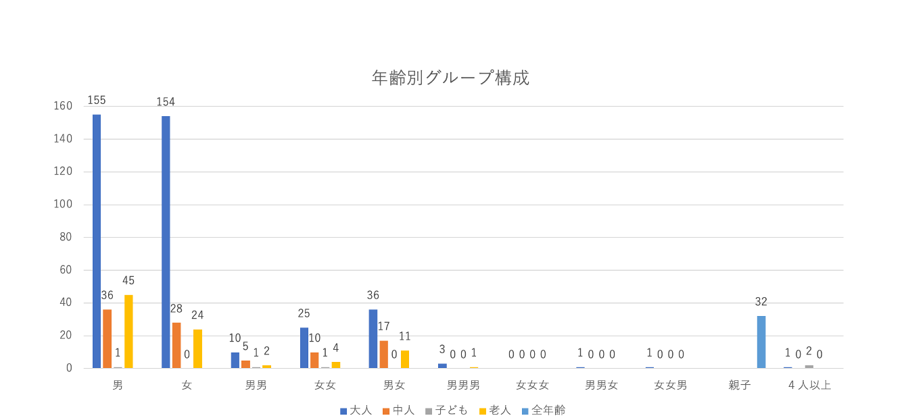
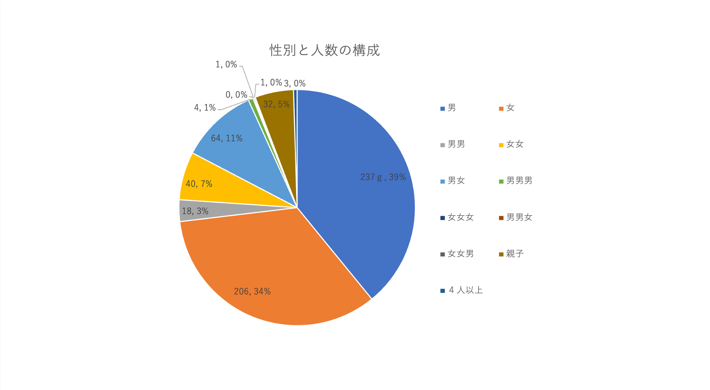

フィールドワークの内容
- テーマ:住
- テーマの内容：みなとみらいに来ている人たちの構成
- 場所：マークイズ前
- 調査内容：グループ構成の人数、年齢、性別、(全てこちらの予測）
調査結果


男女ともに1人で来る人が多い
ペアで来る場合は男女の場合が多い
3人以上のグループは少ない
親子も多く、マークイズに行く人やその前で遊んでいる人もいた
まとめ
今回の調査を始める前の私たちの予測としてマークイズ前の通りには、
大人数で来ている人が多く、若者が次に多いと予測していましたが、
結果としては、1人で来ている人が多く、次に多かったのは老人であったことに驚きました。